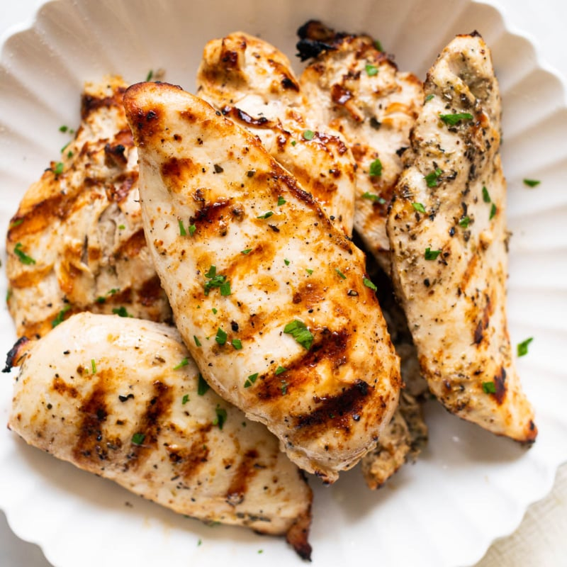

Juicy Grilled Chicken Breasts

About Grilled Chicken Breasts
Grilled chicken is a summer staple. It's a key player when it comes to weeknight dinners and a go-to for meal prep.
Too often, though, grilled chicken especially the ubiquitous boneless, skinless breasts are dry and flavourless. Juicy
grilled chicken is what we really want this summer.
Few dishes are as crowd-pleasing as classic grilled chicken breasts. Every home cook has their own method for preparing this simple protein, but the key
to success is in the technique. The goal is to achieve a golden-brown exterior while keeping the interior moist and tender. This can be accomplished through
proper marination, careful temperature control, and attentive grilling. Whether you're a novice or an experienced griller, mastering the art of juicy grilled
chicken breasts will elevate your culinary repertoire and impress your family and friends.
Ingredients:
- 4 Skinless, boneless chicken breast halves
- 1/4 cup lemon juice, plus wedges for serving
- 1/4 cup of olive oil
- 2 teaspoons of dried oregano or parsley
- 1 teaspoon of seasoning salt
- 1/2 teaspoon of ground black pepper
- teaspoon of onion powder
Steps:
- Gather the Ingredients
- Preheat an outdoor grill for medium-high heat, and lightly oil the grate.
- Working with one chicken at a time, place a chicken breast between two sheets of plastic wrap or parchment paper on a cutting board.
- Using a meat mallet or a rolling pin, gently pound each breast to 1/2-inch thickness.
- Add lemon juice, olive oil, dried oregano or parsley, seasoning salt, black pepper, and onion powder into a large zip-top bag.
- add chicken and press out as much air as possible before sealing the bag.
- Gently massage the chicken to distribute marinade.
- Marinate the chicken in the refrigerator for at least 30 minutes or up to 12 hours.
- Preheat the grill to medium-high and lightly oil the grate.
- Place chicken breasts, smooth-side down on preheated grill; cook, covered, until no longer pink and juices run clear, about 5 minutes per side.
- Insert and instant-read thermometer into the center and should read 74 degrees C (165 degrees F).
- transfer chicken to a cutting board and tent with aluminium foil. Let it rest for 5 minutes.
- Serve with lemon wedges.
Back to home